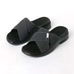

[식당 실내 화장실에는 이런 슬리퍼가 흔하다]수년전 일이다.
식당 실내 화장실에 갔는데 슬리퍼가 오른쪽만 두 짝이 있었다.
안쪽에서 인기척이 들리는걸로 보아 누군가 왼쪽만 두 짝을 신고 들어간것이 분명했다.
다소 불편하긴 하지만 슬리퍼를 신고 들어가보니 웬 남자가 왼쪽 두 짝을 신고 일을 치르고 있었다.
'엉성하긴. 아무리 급해도 신경좀 쓰지.. 쯧'
그 남자는 내가 일을 보는 사이 황급히(내가 보기에는) 화장실을 나갔고.
잠시후 또 다른 사람이 화장실에 들어왔다.
그런데 그 사람 눈빛이 나를 위 아래로 훑어보는게 아닌가.
그 순간 나에게 수많은 깨닳음이 연쇄적으로 스쳐지나갔다.
--
삶은 살아있는 스승이다.